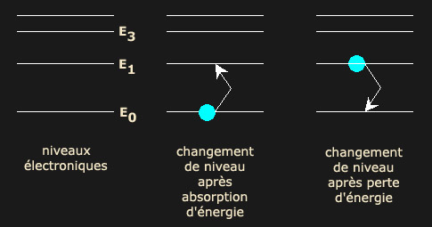
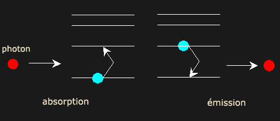
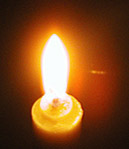
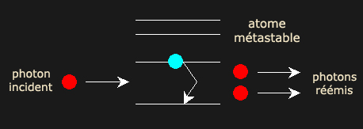

|
|
Navig.
page/section


_____
|
|
Pages soeurs
I, A propos des liants
II, Bulles, siccativ., struct. élec.
III, Caséine, phosphore, dissociation
IV, Les orbitales
V, L'aérogel
VI, Polarisation de la lumière
VII, Sfumato et diffusion Rayleigh
VIII, Les interférentielles
IX, Dextrine, farine et chiralité
X, L'ocre bleue
XI, Les métamatériaux
XII, Le jaunissement
XIII, Laser etc.
XIV, L'holographie
XV, L'holographie numérique
XVI, Extérieur, intérieur, chaux
XVII, L'électrolyse et les ions
XVIII, L'électricité, un peu plus loin
XIX, Oxydation, métaux
XX, Les échelles
XXI, Nature et évolution des résines
XXII, Le mouillage pigmentaire
XXIII, La molette
XXIV, Blanche neige
XXV, Lumière et matière
XXVI, Magnétisme
XXVII, Ambre et vieilles branches
XXVIII, L'origami miroir
XXIX, Le feu
XXX, Peau du métal
XXXI, La ville en un souffle
XXXII, Oxyder des matériaux
XXXIII, Ocre bleue, une solution
_____
|
Copyright © www.dotapea.com
Tous droits réservés.
Précisions cliquer ici
|
|
| |
|
|
Les dialogues sur la physique-chimie
appliquée aux arts
Chapitre
XIII
triptyque laser et 3d
première partie :
Le laser
et certaines propriétés de la
lumière
|
 |
dial dial
dial
|
Ce chapitre des Dialogues de Dotapea est le premier volet d'un triptyque.
Il s'agit comme précédemment d'une discussion entre Jean-Louis, physico-chimiste au CNRS, et un candide,
Emmanuel, mais si le chapitre suivant, consacré à l'holographie, fait intervenir
les mêmes personnes, le troisième donne largement la parole à un expert de la restitution tridimensionnelle.
Parution sous peu.
Le laser est utilisé de plusieurs façons en art. Nous aborderons dans ce texte
ses particularités et potentialités "picturales" (voir ci-dessous
"L'aspect du laser"). Cependant, nous ne
nous priverons pas d'aborder également des concepts plus généraux, notamment la
cohérence ondulatoire, la photoluminescence et l'incandescence.
Une utilisation artistique possible du laser est abordée dans le court-métrage
"Laser, matériau transparent et vidéo"

Cliquer ici
A lire également, un ensemble de documents associés aux
« fontaines laser » et à leur utilisation dans le cadre des célébrations du
cinquantenaire du laser. Cliquer ici
(section Hi-tech).
|
|
Emmanuel : Au fond, le laser qu'est-ce que
c'est?
Tout le monde a entendu dire que c'est une
« lumière cohérente » mais on ne sait guère ce que ces mots
intrigants signifient.
Peux-tu nous parler de ce phénomène d'une manière plus claire, quitte à
partir de la base pour que l'on comprenne enfin ce qui distingue cette
lumière des autres ?
|
|
|
|
Jean-Louis : Partons des électrons. Ils sont astreints à posséder
certaines énergies très précises qui sont dites quantifiées.
Emmanuel : Est-ce que ces niveaux correspondent
aux « orbitales » dont nous avons déjà parlé
[lien] ou bien est-ce tout autre chose ?
Jean-Louis : Non, c'est lié. De façon très
schématique, les orbitales sont des familles de niveaux. Les orbitales sont une vision un peu géométrique,
elles possèdent des caractéristiques de symétrie spatiale. Une même
orbitale regroupe un ou plusieurs niveaux électroniques.
Seuls ces niveaux énergétiques sont accessibles aux électrons, mais ils peuvent
passer de l'un à l'autre en gagnant ou perdant la différence d'énergie
qui sépare les niveaux.

Fig. 1
De façon générale les
électrons absorbent ou restituent l'énergie sous forme de photons.
L'absorption d'un photon suffisamment énergétique fait monter l'électron
sur un niveau d'énergie supérieure, la désexcitation d'un électron et
son retour vers un niveau inférieur entraîne l'émission d'un photon.
|
|
La diffusion de la lumière : apport et restitution d'énergie |
|
Emmanuel : Dans le cas du laser c'est de la
photoluminescence si je ne m'abuse.
Jean-Louis :
C'est le même phénomène, oui docteur. Mais toutes les émissions de photons
fonctionnent sur le même principe, elles ont juste reçu un nom différent
selon les détails exacts, par exemple la durée de vie de l'état excité.
Emmanuel : D'accord. D'ailleurs je relis
la définition de l'incandescence par rapport à la photoluminescence
et… elle ne me semble pas satisfaisante [ce texte a été modifié
entre-temps - lien]. Comment distinguerais-tu ces deux
phénomènes ?
Jean-Louis : Une différence de cause :
un matériau
incandescent est excité thermiquement, par une source de chaleur. Les
physiciens parlent de "phonons" qui sont des quanta d'excitation
vibrationnelle, la chaleur d'un corps étant directement liée aux
"vibrations" de ses atomes/molécules constitutifs.
Un matériau luminescent est excité par des photons
[plus de détails voir ci-dessous]. Une
différence de résultats : un matériau incandescent rayonne un continuum
de photons, de l'infrarouge au visible, toutes les longueurs d'onde
étant possibles. Un matériau luminescent (fluorescent, phosphorescent)
ne réémet qu'un seul type de photons (monochromatique).
Si tu achètes une petite lampe UV (on en trouve facilement dans les
magasins qui vendent des light-show pour les boums du samedi soir, 15€), tu peux regarder chez toi quels sont les corps fluorescents
outre tes dents et ton T-shirt en coton. Certains objets colorés (les
dinosaures de mon fils ou ses petites voitures) donnent souvent des
résultats surprenant, une voiture jaune apparaissant soudain rouge.
Particularité : ces processus ont une efficacité maximale
quand
l'énergie du photon incident est exactement égale à la différence
d'énergie entre les niveaux électroniques, E1-E0 en
figure 1. Un
photon trop ou trop peu énergétique ne sera pas absorbé, les photons
réémis ont tous la même énergie.
 |
|
Incandescence et luminescence : où se situe la
différence ? |
Les niveaux énergétiques accessibles aux électrons sont dépendants de la
structure électronique du corps, et sont donc très spécifiques.
C'est ainsi que la couleur dominante émise par un corps excité est
typique de ce corps, et peut permettre son identification. Exemples : le
sodium excité émet une couleur jaune très typique, c'est le jaune des
lampes à sodium de l'éclairage urbain, la couleur jaune que prend la
flamme d'une bougie où l'on fait tomber du sel de cuisine (chlorure de
sodium).

Emmanuel : Effectivement la flamme tourne au jaune
lorsque l'on asperge une bougie de sel de cuisine (soit dit en passant,
le sel, ininflammable, a tendance à éteindre la bougie). Ce n'est pas
très spectaculaire mais c'est sensible.
Jean-Louis : Le cuivre donne une couleur bleue, le
strontium une couleur rouge, le baryum du vert, calium orangé, potassium
violet. C'est en mettant ces éléments (cuivre, sodium, strontium,
etc...) dans les feux d'artifice qu'on les colore.
Un atome excité ne reste pas excité, sauf si on continue à lui fournir
de l'énergie en permanence.
|
|
Couleur des corps excités |
|
En principe, cette désexcitation est rapide et spontanée. Dans certains
cas, l'état excité peut rester stable un certain temps (on dit
métastable), et il faut que l'atome reçoive
une petite pichenette pour se désexciter. On parle alors d'émission
stimulée. Idéalement, c'est un photon de la bonne énergie qui passe par
là et qui déclenche le processus.

Particularité très intéressante de cette situation, l'atome réémet un
photon absolument identique à celui qui a déclenché l'émission. On a
"photocopié" le photon incident. Les deux photons ont alors la même
énergie (i.e. même couleur, même longueur d'onde) et de plus ils sont "en
phase"
(on dit cohérents).
|
|
"Émission stimulée" |
Emmanuel : Nous y voilà !
Jean-Louis : La lumière (et chaque photon) étant une
onde, elle se propage comme les vaguelettes
créées par la grenouille qui saute dans la mare, comme dans un haïku
célèbre.
|
Courtoisie de Suzue HATTORI ©
|
|
fu-ru-i-ké-ya
ka-wa-zu-to-bi-ko-mu
mi-zu-no-o-to
|
dans le
vieil étang
une grenouille saute
un ploc dans l'eau |
Si plusieurs grenouilles
ordinaires sautent dans l'eau, ça fait plus de vagues, mais elles
n'ont aucune relation particulière entre elles, elles sont
incohérentes. Si les grenouilles laser sautent de telle façon que le
sommet des vagues créées par chacune se produise au même moment que
ceux de sa voisine, on a des vagues "en phase" ou cohérentes". Ca
reste une image grossière, bien entendu, mais c'est l'idée.
Emmanuel : Est-ce que dans le cas de la
cohérence « photonique » on veut dire qu'à un instant t, les
courbes des photons émis sont à la même « hauteur » de la vague ?…
Jean-Louis : Au sens strict, c'est pas "les
courbes des photons", c'est la variation temporelle du champ électrique
associé. Mais oui.
Emmanuel : … ou bien plus simplement qu'ils
ont la même longueur d'onde ?
Jean-Louis : Non. Ils ont aussi la même
longueur d'onde mais c'est pas la même notion. Même longueur d'onde veut
dire même couleur, monochromatique.
|
|
La phase et la cohérence |
Le principe d'un laser est donc "simple" : on réunit un ensemble
d'atomes excités métastables, le premier qui se désexcite émet un photon
qui stimule l'émission de tous les autres atomes. Les photons qui
sortent sont tous identiques. On a une lumière monochromatique
cohérente.
Le milieu actif peut être un gaz (CO2, Argon, Hélium+Néon)…
Emmanuel : Hélium + néon… Ca veut dire
qu'il y a deux longueurs d'ondes dans ce cas ?
Jean-Louis : Non, c'est plus compliqué que
ça. En fait on se sert des électrons d'un des gaz pour faire un
transfert d'énergie vers l'autre gaz, dont les atomes se désexcitent
alors en émettant la lumière rouge monochromatique.
Emmanuel : D'accord. Pareil dans le CO2,
quel(s) atome(s) émet(tent) les photons ? C'est marrant, l'idée que le
banal gaz carbonique puisse émettre de la lumière laser.
Jean-Louis : Ben c'est comme ça. Je
pourrais pas vraiment t'expliquer pourquoi, c'est un matériau qui
convient, c'est tout.
|
|
Quelles substances dans un émetteur laser ? |
|
Si tu veux tout savoir, il ne suffit pas d'envoyer les électrons sur un
niveau supérieur et de les faire retomber. Il faut réaliser ce qui
s'appelle une inversion de population ce qui signifie que contrairement
au régime normal, on a plus d'électrons excités que d'électrons
"calmes". On dit que l'on pompe le milieu laser. Et c'est la
désexcitation soudaine de cette population qui donne l'émission laser.
On ne peut pas réaliser ce pompage et cette inversion de population avec
n'importe quoi, il faut que les niveaux électroniques soient au bon
endroit, et ça dépend des molécules.
|
Dans l'amplification, un photon en
donne deux, mais le deuxième photon vient d'un électron que tu as
péniblement excité en injectant de l'énergie dans ton laser (lorsque
tu "pompes ta cavité"). Il n'y a pas création d'énergie, tu pompes
beaucoup plus que tu ne récupères de photons. |
|
L'acronyme LASER signifie en anglais Light
Amplification by Stimulated Emission of Radiation : Amplification de
la lumière par émission stimulée de radiation. |
[ajout 9/2013] C'est une réaction en
chaîne, un photon en induit deux qui en induisent quatre, qui en
induisent huit, etc... Et ça recommence et ça continue. C'est d'ailleurs
pour ça que la longueur de cohérence de la lumière obtenue est
globalement égale à la longueur de la cavité laser.
[fin ajout]
|
|
Parenthèse sur le pompage laser et
l'amplification |
|
Longueurs d'onde
Avant le laser, il y eut le maser (avec un m pour
microwave, micro-onde), qui date de 1953. Basé sur le même principe que
le laser, il émettait sur des fréquences plus basses que celles de la
lumière visible.
Le premier laser (1960) était rouge. Obtenir
la longueur d'onde la plus courte possible pour un coût modéré n'a cessé
d'être un enjeu scientifique, technologique et commercial,
particulièrement pour les technologies DVD. Le laser bleu ou bleu-violet
à bas prix permet en effet de graver les informations sur un espace plus
réduit qu'un laser rouge |
|
Le milieu actif peut aussi être un solide (YAG, rubis, semiconducteur).
Emmanuel : Qu'est-ce que c'est, YAG,
Jean-Louis ?
Jean-Louis : Yttrium Aluminum Garnet... Un
grenat ("rubis") d'yttrium et
d'alumine.
Concernant le milieu actif, il peut aussi s'agir d'un liquide (lasers à
colorant).
Emmanuel : Lasers à colorant ?
Jean-Louis : Des molécules colorées
organiques en solution.
Emmanuel : Très curieux. Quel est le
principe ? |
|
D'autres substances |
Jean-Louis : C'est exactement le même
principe, le milieu laser est juste liquide, des molécules en solution.
Un des avantages c'est que les molécules de colorant ont beaucoup plus
de niveaux électroniques que des atomes ou des corps simples, on peut
donc accorder ces lasers sur un certain domaine pour avoir le choix de
la longueur d'onde émise.
L'excitation du milieu actif peut se faire par irradiation lumineuse
(des flashs ou un autre laser), énergie thermique, énergie électrique
[voir amplification ci-dessus].
Emmanuel : Si j'ai bien compris,
l'important est que ça cadre avec le niveau d'excitation que l'on veut
obtenir dans le corps concerné. Si c'est la même chose qu'avec certains
matériaux photoluminescents, ça dépend de pas mal de particularismes,
non ?
Jean-Louis : Ca c'est
si on veut optimiser.
En pratique on gaspille beaucoup en envoyant un tas de photons dont très
peu sont utiles. Le rendement énergétique des lasers est très faible. |
|
L'émission
"luminescente" nécessite comme pour toute émission de lumière un
apport initial d'énergie. A une spécificité près : il s'agit, quel
que soit le type d'apport initial (en l'occurrence renouvelé), de provoquer l'émission des "bons
photons", ceux qui sont capables de produire une luminescence. |
Pour bien sentir la différence avec une source "classique" : une lampe à
incandescence émet une lumière blanche, polychromatique, quand on
chauffe son filament avec un courant électrique. |
|
Accorder son laser |
Dans un laser, la source de lumière est atomique, donc très petite, donc
très brillante, monochromatique, et toute l'énergie étant concentrée
dans une seule longueur d'onde on a beaucoup d'énergie lumineuse.
En prime, mais ça sert pas tous les jours ni à tout le monde, cette
propriété de cohérence sert pour des applications métrologiques ou très
particulières comme l'holographie.
Tous les atomes de tungstène du fil sont excités, un peu sur tous les
niveaux possibles (d'où l'émission d'une lumière non-monochromatique),
ils ne sont pas en phase (aucune cohérence entre les photons émis
aléatoirement), la source de la lumière est un objet macroscopique, le
fil, et surtout le rendement est minable, on produit beaucoup plus de
chaleur que de lumière.
L'aspect du laser
|
|
Produire moins de chaleur et plus de lumière |
C'est cette
même cohérence qui donne aux spots laser leur aspect particulier. Une
surface éclairée par un laser prend un aspect grumeleux, inhomogène (on
parle de speckle), dû au fait que la lumière cohérente se prête
excellemment à la production d'interférences. Dans le cas du speckle,
les interférences sont le fait des inhomogénéités de la surface. Ca sert
précisément en métrologie pour quantifier les rugosités…
Wikipédia indique : « Le speckle (ou encore tavelures en français) est
l'aspect granuleux que prend un écran réfléchissant qui diffuse la
lumière lorsqu'il est éclairé par un faisceau de lumière cohérente
spatialement (un laser par exemple). »
Ce phénomène est dû au fait qu'il y a interférence entre les rayons
diffusés par chaque point de l'écran. Ces interférences donnant de
manière aléatoire des points lumineux ou sombres l'écran prend un aspect
granuleux avec une image qui « fourmille ».
Comme ça j'ai appris le nom français....
|
|
Le
speckle ou tavelure |
Emmanuel : Il y a d'une part les tavelures,
d'autre part les problèmes mécaniques des miroirs. Les deux phénomènes
joints donnent des images que l'on identifie facilement.
La technique d'affichage laser par projection simple, directe, reste surtout exploitée dans les concerts
rock et les boîtes de nuit, pas dans les salons.
Jean-Louis : L'aspect "typique" des lasers
est inévitable. Il est précisément lié à la cohérence de la lumière. On
n'aura que très difficilement, je pense, des aspects naturels.
Les miroirs mobiles utilisés pour les shows laser ont effectivement des
limites, mais ce que l'on arrive à faire est tout de même spectaculaire,
non ?
Emmanuel : D'accord. Autre chose, admettons que
dans le but d'obtenir de la couleur, je place
du néon, de l'hélium, du grenat et du CO2, enfin une bonne soupe dans le
lieu d'amplification et que j'envoie tous les rayons qu'il faut pour que
chaque élément soit excité. Comment ça se passe ? Mal, j'imagine.
Jean-Louis : Oui, ça se passera mal car
tous ces corps n'ont pas les mêmes exigences, et si on met trop de
matière l'absorption domine et tue l'émission.
[Note : pour obtenir des effets polychromes
on est donc obligé d'employer plusieurs lasers]
***
|
|
Les
miroirs et l'apparence |
Emmanuel : Avec le tube cathodique on
détourne les électrons là où on veut, mais quand le rayonnement à
traiter est déjà photonique, on dirait qu'il se fiche complètement des
champs et que c'est pour ça que l'on doit utiliser des miroirs. C'est
une question de charge ?
Jean-Louis : Ben oui, les photons ne sont
pas chargés et pas magnétiques.
Emmanuel : Je suis un photon. Je me
cogne sur un électron, bing. Schématiquement, j'accrois son énergie
qu'il va relâcher soit presque immédiatement (en 10-15 sec., disais-tu -
lien) soit un peu
plus tard sous la forme d'un nouveau photon. Pendant ce temps, j'ai
modifié quelque chose que l'on nomme un champ, ou plusieurs. Pourtant
moi-même je suis insensible à ce type de champs.
Est-ce que le tableau est correct ? Souhaites-tu corriger ou ajouter des
précisions ?
|
|
Bing ! |
Jean-Louis : Tu poses les bonnes questions
! Quand un photon rencontre un électron, il peut se passer plusieurs
choses : le photon est absorbé à jamais, son énergie est convertie en
chaleur par le milieu qui l'a absorbé. Le photon est diffusé par
l'électron en gardant son énergie (diffusion élastique), c'est le plus
courant. Le photon est diffusé avec une énergie inférieure (diffusion
inélastique), c'est plus rare (statistiquement) mais utile par exemple
pour l'analyse spectroscopique des oeuvres d'art. Ensuite il y a les
phénomènes de luminescence, fluorescence, émission stimulée…
Emmanuel : Que se passe-t-il lorsque le
rayon laser touche la surface rugueuse, en comparaison avec d'autres
lumières ? Y a-t-il une relation avec les angles de réflexion qui
changeraient en fonction des longueurs d'ondes si celles-ci étaient
variées et non cohérentes ?
Jean-Louis : Non, c'est plutôt les
variations locales d'épaisseur, je crois. C'est pas de la dispersion
puisque la lumière est monochromatique.
|
|
Les
deux destins du photon |
Emmanuel : Pourquoi une lumière cohérente «
tient-elle la route » beaucoup plus longtemps que les autres dans un
milieu comme par exemple l'air ou l'eau ? C'est étrange !
Jean-Louis : Ca c'est pas directement lié à
l'effet laser. C'est parce que la lumière est produite dans une cavité
(on parle de cavité laser, c'est comme ça) qui a des propriétés optiques
particulières qui font que le faisceau émergent est bien collimaté et
très peu divergent.
Emmanuel : D'accord. Partant de là, il y aurait
un sujet à part entière. Tu as expliqué qu'il y avait une sorte
d'autostimulation dans un milieu qui semble confiné. Comment est-ce que
l'on confine les photons engendrés et comment est-ce qu'on les libère ?
Jean-Louis : La cavité est limitée par deux
miroirs, l'un parfait, l'autre réfléchissant à ~98%. On a donc en gros
98% des photons qui sont confinés dans la cavité et 2% qui s'échappent,
le rayon laser.
On ne peut pas faire pareil avec une lampe ordinaire à cause de la
taille macroscopique du filament émetteur. Il faudrait que ça soit
ponctuel, au sens mathématique du terme. Un filament c'est des
millimètres. Une lampe à arc c'est déjà beaucoup mieux, un atome c'est
le top.
|
|
Vertus de la cavité laser :
confinement et échappement |
Emmanuel : Encore autre chose pour finir :
on se représente le rayon comme un tube de lumière. Comment fait-on ça
et serait-on obligé de le faire ? On se demande pourquoi on ne produirait
pas un cône.
Jean-Louis : Au sens strict c'est un cône
très faiblement divergent. Idéalement ça devrait être un cylindre, mais
rien n'est parfait... Comme dit, c'est une conséquence de la géométrie
de la cavité laser. Les gros lasers scientifiques ont des cavités qui
font parfois 1m de long, ils sont très bien collimatés. Les petits
pointeurs lasers ont une cavité de l'ordre du millimètre, la divergence
du faisceau est très visible. |
|
Cône
laser |
|
Une mise en perspective pour terminer : les
petits lasers que l'on achète un peu partout ont une puissance de
quelques milliwatts qui peut déjà mettre en danger la vue s'ils sont
orientés vers les yeux. Mais nous évoquons dans un autre chapitre
d'autres lasers qui sans être exceptionnels sont plus puissants. Ils
sont employés dans le cadre de techniques holographiques. Certains
déploient une énergie de six watts qui, comparée à une ampoule
électrique banale, paraît plus qu'anodine. Et pourtant, comme le dit
Dominique Sevray dans le chapitre XV des Dialogues de Dotapea (lien),
cela brûle tout.
Évoquons maintenant le projet français en partie militaire nommé
Mégajoule.
Sachant qu'un watt est un joule par seconde on peut imaginer la
puissance d'un laser portant un tel nom.
Un
laser peut être éminemment dangereux ou extrêmement utile (on citera les
applications médicales par exemple), ou les deux à la fois comme
beaucoup d'autres outils.
Mentionnons enfin les incroyables "pico-projecteurs"
intégrables sur téléphones mobiles ou sur boîtiers séparés.
Lire article court et lien dans
« Hi-tech ». |
|
Chapitre suivant |
Retour
début de page
|
|

 Communication
Communication


|
|